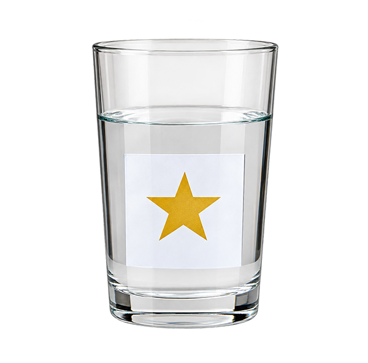
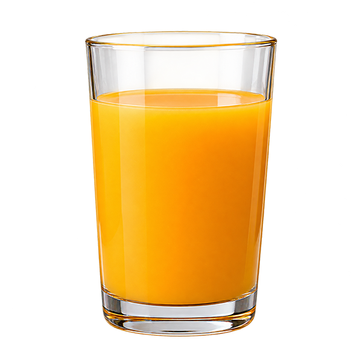
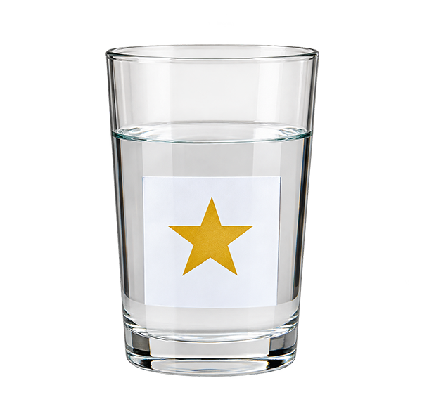

사이다의 특징을 3가지 골라 보세요.

사진을 보는 AI가 해바라기와 국화를 구별하려면 어떤 특징을 봐야 할까요?
AI가 무엇인지 알아내는 순서대로 카드를 놓아 보세요.
1
2
3
알아보기
정답 찾기
공부하기
퀵 드로우 AI가 사과라고 알아보려면 무엇을 더 그려야 할까요?
물, 우유, 오렌지 주스를 공부한 AI에게 투명한 식초 사진을 보여 주면 어떻게 답할까요?
AI가 공부한 사진

물우유

오렌지 주스
새로운 사진

투명한 식초정답이에요!
다시 한번 생각해볼까요?